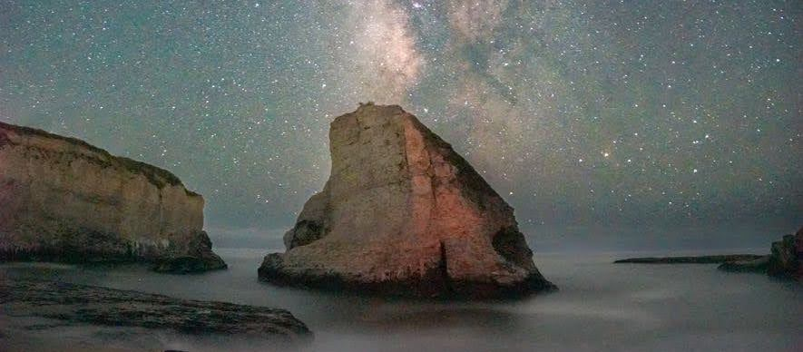

{% extends "base.html" %}
{% block content %}

    <h1>Zack Andalman: Astrophysics Ph.D. Student</h1>
    <h2 class="subheader"><a href="https://www.krellinst.org/csgf/" target="blank">Department of Energy Computational Science Graduate Fellow</a></h2>
    <h2 class="subheader"><a href="https://web.astro.princeton.edu/" target="blank">Princeton University Department of Astrophysical Sciences</a></h2>

    <div style="text-align: center; position: relative;">
        
        <p style="position: absolute; bottom: 0%; right: 26%; font-size: 0.8em;">Photo Credit: Piramon Kumnurdmanee</p>
    </div>

    <div id="button-holder">
        <a href="https://arxiv.org/a/andalman_z_1.html" target="blank"><div class="button" id="publications"><p>Publications</p></div></a>
        <a href="../static/resume.pdf" target="blank"><div class="button" id="CV"><p>CV</p></div></a>
    </div>

{% endblock %}

{% block script %}
    <script>
        $("#navbar").children().eq(0).addClass("active");
    </script>
{% endblock %}